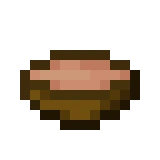

Mushroom Stew

Description
It's a stew made from various kinds of mushrooms.
Ingredients
1x Red mushroom
1x Brown mushroom
1x Bowl (To hold the stew)
Steps
Put all the ingredients into a crafting grid, this can be done from the player inventory.